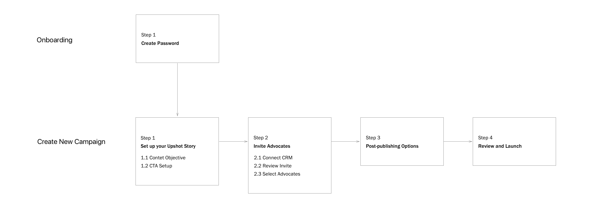
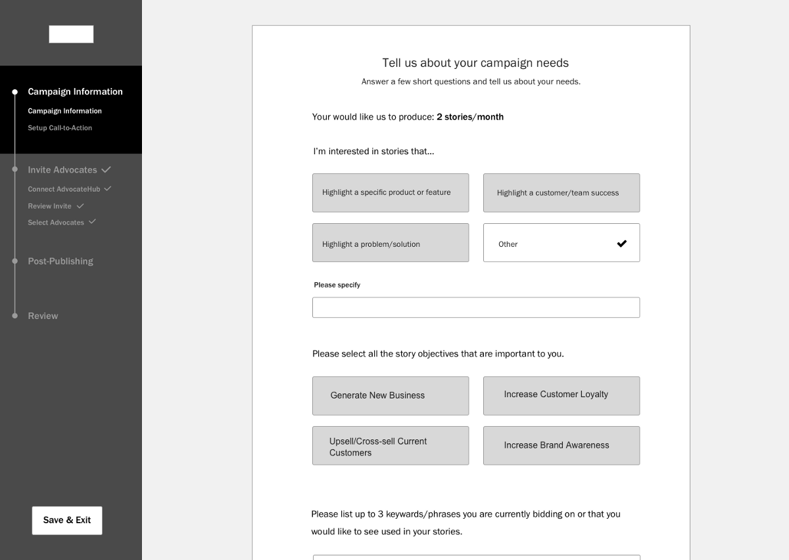
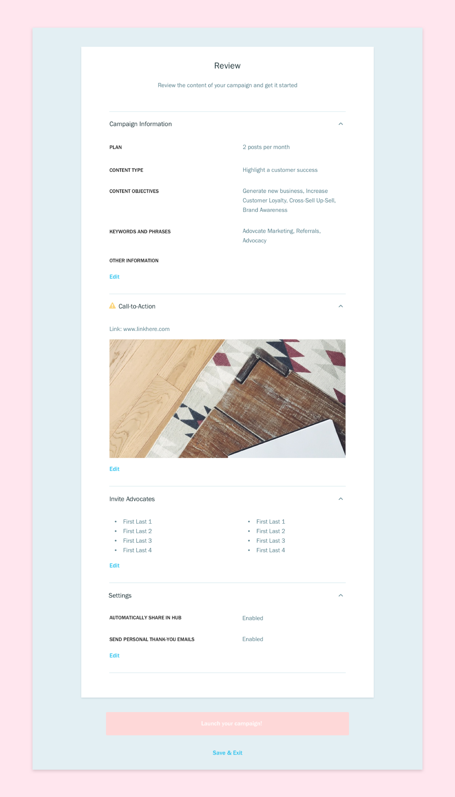

The initial MVP onboarding flow for vendors was confusing and difficult to complete. A month after the MVP launch, I redesigned the entire flow based on user feedback. Through user testing, we were able to create a comprehensive and easy process. However, due to technical resource constraints, I was limited to using existing design elements and quick fixes so users can exit and save their progress at any time.
Designing the Campaign Creation Flow for Upshot
UX and UI Design

Final flow for onboarding and creating new campaigns.

The ideal campaign creation navigation design.
Final create new campaign flow.

Step 2 of the campaign creation flow.

Last step of the campaign creation flow.